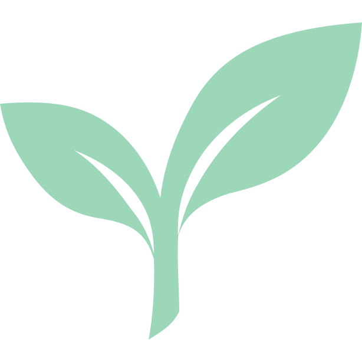

Seedyversão 0.5.9
Crie um projeto do zero, abra uma pasta ou clone um repositório.
Novo projetoSpring, Maven,
Angular e React
nAngular e React
Abrir pastaum projeto que já
está no computador
oestá no computador
Clonar repositóriodo GitHub ou por
um endereço git
cum endereço git
PROJETOS RECENTES/ buscar projeto…/
FB
Feirinha-BackendC:\Matheus\Projects\Feirinha-Backend
Spring Boot⎇ masteragoraLB
Lemos-BankC:\Matheus\Projects\Lemos-Bank
Java · Maven⎇ mainontemRT
react-testeC:\Matheus\Projects\react-teste
React · Vite⎇ mainhá 3 diasSD
SeedyC:\Matheus\Projects\Seedy
Angular · Tauri⎇ mainhá 5 dias
Primeira vez por aqui?
começar o passeio t
fechar x
Um passeio de 2 minutos pelos atalhos, a IA e o servidor de aplicação.